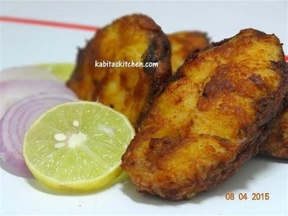

Mithila Fish Fry

Description
Discover the magical taste of crispy Fish fry, a scrumptious fish recipe. The fish cubes are dipped in a batter comprising of maida, salt, baking powder, lime juice ,pepper, beaten egg and chilli powder. These batter coated fish cubes are then deep fried and served with onion rings and chilli sauce. Simply amazing!
Ingredients
- 600 gms fish
- 1½ carrots, chopped
- ¼ chopped cabbage
- 2 tbsp chopped capsicum
- 3 tbsp lemon juice
- 1½ cups plain flour (maida)
- 2 tbsp soy sauce
- 1 tsp mustard (rai / sarson) powder
- salt to taste
- black pepper (kalimirch) powder to taste
- ½ tsp chilli powder
- 5 eggs
- ½ tsp baking powder
- oil for frying
Steps
- Cut fish in cubes.
- Make a batter by mixing flour, baking powder, lemon juice, soya sauce, mustard powder, salt, pepper powder, eggs and chilly powder.
- Add chopped vegetables, fish cubes and toss well.
- Deep fry in oil, till golden brown and crispy.
- Serve hot with french fries.
Credit: All the content, except for the image, is completely copied from here.